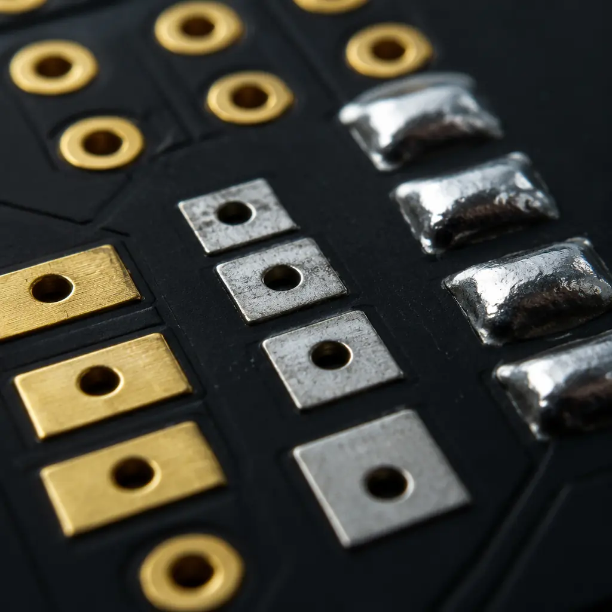
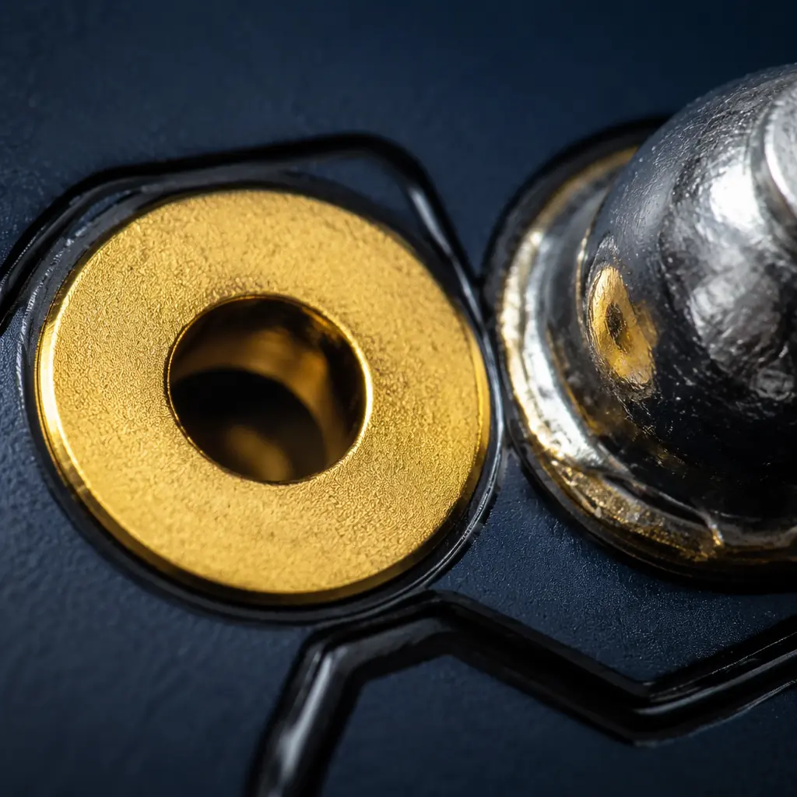

If you import printed circuit boards or electronic assemblies into the United States or European Union, conflict minerals compliance is no longer optional — it's a legal requirement that can block your goods at customs, disqualify you from government contracts, and expose your company to SEC enforcement. Yet a surprising number of PCB buyers don't realize that the tin, tantalum, tungsten, and gold (3TG) in their circuit boards falls squarely under these regulations.
At Huaxing PCBA, we've helped 150+ international clients navigate compliance requirements across automotive, medical, and industrial electronics. Our supply chain management system tracks material origins back to smelter level, and we provide full CMRT (Conflict Minerals Reporting Template) documentation with every shipment. Here's what you need to know to keep your supply chain compliant and your procurement risk-free.

What Are Conflict Minerals — and Why Do They Matter for PCB Buyers?
Conflict minerals refer to four metals — tin, tantalum, tungsten, and gold (collectively 3TG) — sourced from the Democratic Republic of Congo (DRC) and adjoining countries, where their extraction has been linked to armed conflict and human rights abuses. These four metals are present in virtually every PCB assembly:
| Mineral | Where It Appears in PCBs | Typical Source Regions |
|---|---|---|
| Tin (Sn) | Solder paste, HASL/immersion tin surface finish, component leads | China, Indonesia, Myanmar, DRC |
| Tantalum (Ta) | Tantalum capacitors, high-reliability passive components | Rwanda, DRC, Brazil, Australia |
| Tungsten (W) | Via metallization, contact pads, some IC packaging | China, Vietnam, Russia, DRC |
| Gold (Au) | ENIG/ENEPIG surface finish, edge connectors, wire bonding | China, Australia, Ghana, DRC |
Every PCB your company imports — whether bare boards or fully assembled PCBA — contains at least two of these metals (tin in solder and gold in surface finish are near-universal). That means your conflict minerals reporting obligation is triggered with every purchase order.
Key Regulations: Dodd-Frank vs EU Conflict Minerals
Two major regulatory frameworks govern conflict minerals, and their requirements differ significantly:
Dodd-Frank Section 1502 (US — SEC Filing Required)
Enacted in 2010, §1502 requires all publicly traded companies to disclose whether their products contain 3TG from the DRC region. If they do, the company must file a Conflict Minerals Report (Form SD) with the SEC detailing their due diligence. While privately held companies aren't directly required to file, they are swept in through customer requirements — if you supply to any public company (Apple, Tesla, Honeywell, etc.), they will demand your conflict minerals data as part of their compliance obligation. For more on how quality standards intersect with regulatory requirements, see our PCB Certifications & Compliance Guide.
EU Conflict Minerals Regulation (2021/2021 — Mandatory from 2021)
The EU regulation applies to importers of 3TG into the EU above specific volume thresholds — not just publicly traded companies. It requires supply chain due diligence aligned with OECD Due Diligence Guidance. EU importers of PCBs and electronic assemblies must demonstrate that their 3TG sourcing has been verified through a recognized audit scheme (RMAP or equivalent). Unlike Dodd-Frank, which only mandates disclosure, the EU regulation mandates action — you must actively verify your supply chain. For companies shipping products to Europe, also review our Halogen-Free Compliance Guide and REACH, WEEE & TSCA Compliance Guide.
Key Takeaway: If you sell electronic products in the US and EU, you must satisfy both frameworks — SEC disclosure under Dodd-Frank and active supply chain verification under EU rules. Most tier-1 customers expect you to provide a completed CMRT regardless.
What Your PCB Supplier Must Provide: The CMRT and Smelter Audit Trail
The RMI (Responsible Minerals Initiative) Conflict Minerals Reporting Template (CMRT) is the industry-standard document for declaring 3TG sourcing. Your PCB supplier should provide a completed CMRT that includes:
Full Smelter/Refiner Identification
The CMRT must list every smelter or refiner that processed the 3TG in your boards. Each smelter should have an RMAP audit ID. Smelters without audit IDs are a red flag — they haven't been independently verified as conflict-free. A typical PCB assembly supply chain includes 3-8 smelters across the four minerals. Our supply chain documentation at Huaxing PCBA covers all smelters in our procurement network, with RMAP-conformant IDs for every source.
Country of Origin Declaration
For each 3TG metal, the CMRT must state the country (or countries) of origin. If any mineral originates from the DRC or adjoining countries (Angola, Burundi, Central African Republic, Republic of Congo, Rwanda, South Sudan, Tanzania, Uganda, Zambia), the smelter must be RMAP-conformant. If your supplier lists a DRC-country origin without a conformant smelter ID, the material is non-compliant under both Dodd-Frank and EU regulations.
Company-Level Policy Statement
Your supplier should articulate a formal conflict minerals policy — not just "we comply." The policy should reference specific due diligence measures, their smelter engagement process, and escalation procedures for non-conforming suppliers. At Huaxing PCBA, this policy is integrated into our ISO 9001 and IATF 16949 quality management systems, ensuring it's audited as part of our regular certification reviews.

6 Questions to Ask Your PCB Supplier Before Your Audit
Many PCB manufacturers will say "we're compliant" without the documentation to back it up. Before your next compliance audit, send these questions to your supplier. If they can't answer all six, you have a gap in your due diligence:
"Can you provide a current-year CMRT covering all our PCB orders?"
The CMRT must be for the current reporting year (RMI updates the template annually). A CMRT from 2024 doesn't satisfy 2026 requirements. The template should cover all products you've purchased — not a generic "company level" declaration that excludes specific product lines.
"Are all your smelters RMAP-conformant or actively undergoing audit?"
The RMAP (Responsible Minerals Assurance Process) is the gold standard for smelter verification. If a smelter is listed as "active" in the RMI database, it's RMAP-conformant. If it's "communication suspended" or "not eligible," it's a risk. Acceptable answers include: all smelters conformant, or a defined remediation plan with dates for non-conformant smelters.
"Do you source any 3TG from the DRC region? If yes, from which conformant smelters?"
DRC-region sourcing is not inherently non-compliant — the key is whether the smelter has been independently audited as conflict-free. A supplier who sources from the DRC region through RMAP-conformant smelters is compliant; one who sources from non-audited smelters is not.
"What due diligence do you perform on your raw material suppliers?"
Your PCB supplier's compliance is only as strong as their upstream supply chain. They should be able to describe: how they vet new material suppliers for conflict minerals risk, their ongoing monitoring process, and their escalation procedure when a supplier's smelter loses RMAP status. For insight into evaluating supplier quality more broadly, see our PCB Supplier Audit Checklist.
"Can you segregate compliant and non-compliant materials in your facility?"
Physical segregation matters. If your supplier can't physically track which lots of tin or gold were used on your specific boards, their CMRT is essentially an educated guess. Look for lot-level traceability: each production batch should be traceable to a specific receipt of raw materials with known smelter origins. Our PCB traceability systems maintain this chain of custody from incoming material to finished board.
"What happens if one of your smelters is delisted from the RMI?"
Smelters can lose RMAP status if an audit finds non-conformance. Your supplier should have a documented process for: detecting delistings, quarantining affected inventory, sourcing alternative conformant smelters, and notifying affected customers. If their answer is "that's never happened," they're either not monitoring or not telling you the truth.
Procurement Tip: Write these six questions into your supplier quality agreement (SQA) as an annual re-certification requirement. If a supplier can't provide updated CMRT and smelter data each year, treat it the same as a failed quality audit. Need a framework for evaluating supplier quality holistically? See our PCB Supplier Quality Scorecard guide.
The Real Cost of Non-Compliance
Beyond the obvious legal risk — SEC enforcement actions, EU import restrictions — conflict minerals non-compliance creates business risks that hit your bottom line directly:
| Risk | Consequence | Real-World Example |
|---|---|---|
| Customer disqualification | Large OEMs (Apple, Google, Tesla) require complete CMRT as part of supplier onboarding; non-compliance = automatic rejection | Multiple tier-2 suppliers dropped from automotive programs in 2023-2025 for incomplete 3TG reporting |
| Customs holds | EU customs can detain shipments lacking conflict minerals documentation under Regulation 2021/2021 | Increasing enforcement since 2024 as EU member states implement inspection protocols |
| Government contract exclusion | FAR (Federal Acquisition Regulation) requires conflict minerals compliance for all US federal contracts | Automatic exclusion from GSA schedule and defense contracts |
| ESG rating impact | MSCI, Sustainalytics, and other ESG raters factor conflict minerals into supply chain scores | Poor scores affect institutional investment and B2B customer evaluations |
| Reputational damage | NGO campaigns targeting electronics supply chains can generate negative press coverage | Multiple electronics brands faced campaigns in 2024-2025 over tin sourcing from artisanal mines |
How Huaxing PCBA Ensures Conflict-Free Sourcing
Our conflict minerals compliance program is integrated into our quality management system rather than treated as a separate exercise:
First, we maintain a verified smelter database with 100% RMAP-conformant or active-audit status for all 3TG sources. No raw material enters our facility without verified smelter documentation. Second, our ERP system tracks 3TG-containing materials by lot, enabling full traceability from incoming inspection through SMT assembly to final shipment — you can trace the gold on any ENIG pad back to a specific smelter. Third, we provide updated CMRT documentation annually and on-demand for specific purchase orders. Our quality testing protocols include material verification that aligns with conflict minerals traceability requirements.
With 8 SMT lines processing 8 million placements per day, and certifications including ISO 9001, ISO 14001, and IATF 16949, our compliance infrastructure is audited by third-party certifiers — not self-declared. For companies requiring full supply chain transparency, our dual sourcing strategies can further de-risk your procurement.